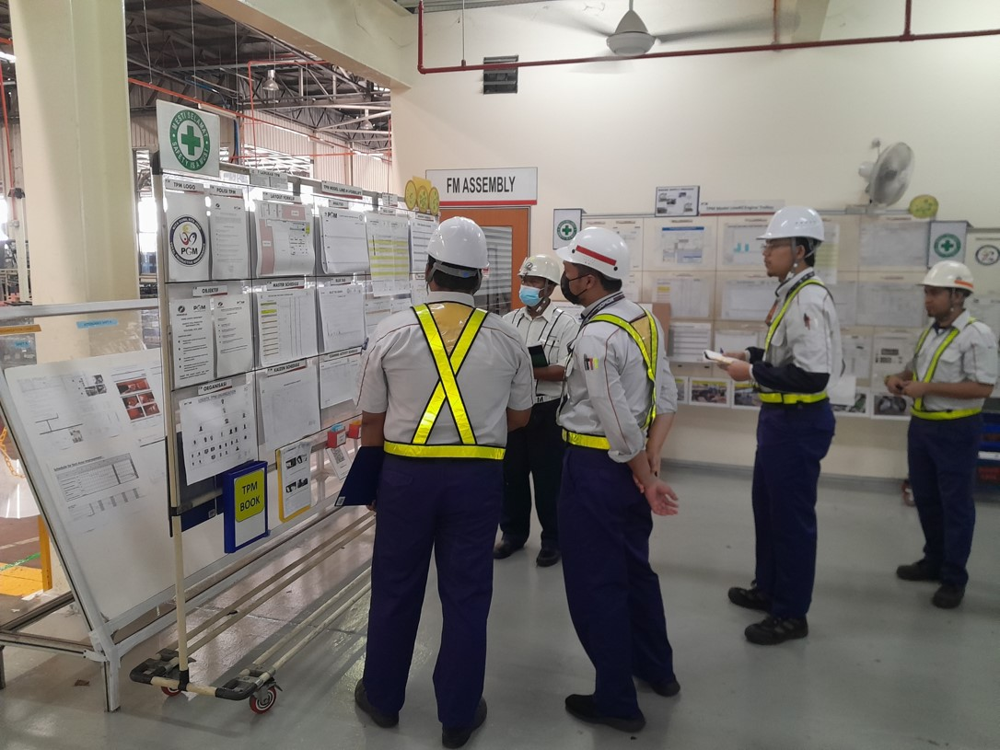

- Pembelajaran khusus kepada pihak Pengurusan sehingga ke Operator pengeluaran.
- Agenda utama adalah implimentasi step 1 hingga step 5 disetiap model mesin/line.
- Penilaian, pemeriksaan dan pergerakan aktiviti secara terperinci.
- Mempromosikan aktiviti di mana semua pekerja mempunyai sasaran yang harus dicapai.
Apa itu TPM

TPM adalah satu sistem penyelenggaraan mesin yang merangkumi keseluruhan jangka hayat mesin/peralatan disetiap seksyen.

Ia melibatkan semua kakitangan dari pihak pengurusan hingga ke pihak pengeluaran dan mempromosikannya melalui aktiviti kumpulan kecil untuk mengurangkan 7 kerugian dan memaksimakan keupayaan mesin/peralatan.